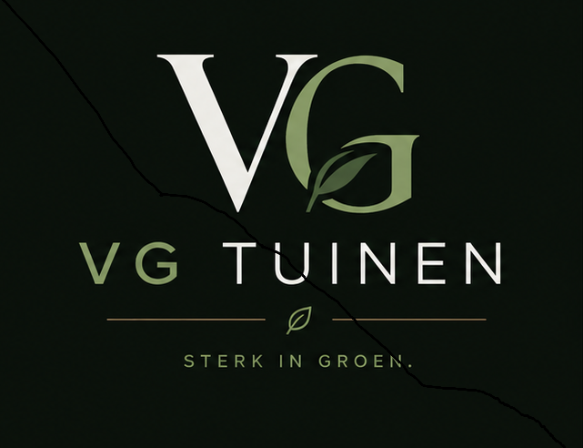

Tuinaanleg
Aanleg of vernieuwing van tuinzones, beplanting en een nette totaalafwerking.
VG Tuinen helpt particulieren met verzorgde tuinen, nette uitvoering en duidelijke communicatie. Van onderhoud en snoeiwerken tot de aanleg van een nieuwe tuin.

Beschikbaar voor onderhoud, snoeiwerken en tuinaanleg in Herentals en omgeving.
Diensten
Een praktische en verzorgde aanpak voor tuinwerken, afgestemd op jouw tuin en jouw wensen.
Aanleg of vernieuwing van tuinzones, beplanting en een nette totaalafwerking.
Periodiek of eenmalig onderhoud zodat jouw tuin het hele jaar door verzorgd oogt.
Snoeien van hagen, struiken en kleinere bomen met aandacht voor vorm en gezondheid.
Voorjaars- en najaarswerken, opruimen en de tuin voorbereiden op elk seizoen.
Werkwijze
Je neemt contact op via telefoon, e-mail of WhatsApp.
We bekijken samen de werken en jouw verwachtingen.
De werken worden professioneel en netjes uitgevoerd.
Een verzorgde tuin met aandacht voor detail en afwerking.
Over VG Tuinen
VG Tuinen is een eenmanszaak in bijberoep, actief in Herentals en omgeving. De focus ligt op kwalitatieve tuinaanleg en tuinonderhoud, met correcte afspraken, duidelijke communicatie en een verzorgd eindresultaat.
Of het nu gaat om regelmatig onderhoud, snoeiwerken of de aanleg van een tuin: elke opdracht wordt met zorg en oog voor detail uitgevoerd.
Vrijblijvend contact
Contact
Vraag vrijblijvend informatie of een offerte aan.
Bel rechtstreeks of stuur een WhatsApp-bericht. Voor een offerte mag je ook mailen.